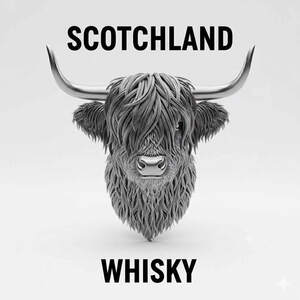

Trade Mark Journal No.2025/043 24 October 2025
UK00004271625 30 September 2025 (21,33)

- Class 21
- Brandy snifters; Whisky glasses; Liqueur flasks; Pint tankards; Bottle pourers; Whisky stones; Neoprene zippered bottle holders; Schnapps glasses; Pint glasses; Insulated bottles [flasks]; Snifters; Wine bottle cradles; Tankards; Pewter tankards; Glass flasks; Drinking flasks; Glass bottles; Beer glasses; Bottle coolers; Drinking bottles; Pilsner drinking glasses; Bottle cradles; Bottles; Beer mugs; Drinking flasks for travellers; Flasks for travellers (Drinking -); Drinking flasks [for travellers]; Glass decanters; Wine decanters; Glasses, drinking vessels and barware; Pilsner glasses; Glass mugs; Cocktail glasses; Bottle buckets; Glass stoppers for bottles; Flasks; Bottle openers; Wine glasses; Tumblers for use as drinking glasses; Vacuum bottles [insulated flasks]; Decanters; Perfume bottles; Bottle brushes; Plastic bottles; Drinking glass holders; Liqueur cups; Wine pourers; Insulated flasks; Glass carafes; Beer jugs; Glass flasks [containers]; Drinking glasses; Insulating sleeve holder for beverage cups; Stirrers (Drink -); Beer steins; Hip flasks; Vacuum flasks; Vacuum flask cookers; Vacuum flasks for holding drinks; Vacuum flasks for holding food; Insulating flasks; Flasks for travellers; Insulated flasks for household use; Thermally insulated flasks for household use; Smart medicine bottles, empty; Tea bag rests; Mug sleeves; Glass cartridges for medication, empty; Vacuum pumps for wine bottles; Smart medicine bottles, sold empty; Bottle openers incorporating knives; Reusable stainless steel water bottles sold empty; Plastic water bottles [empty]; Cocktail stirrers; Margarita glasses; Cocktail shakers; Cocktail sticks.
- Class 33
- Scotch Whisky complying with the specifications of the GI Scotch Whisky.
DGADJ VS GM PROPERTY LTD